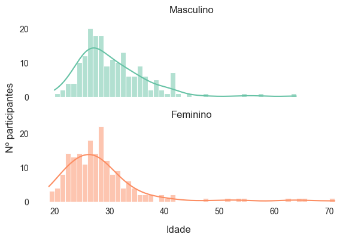
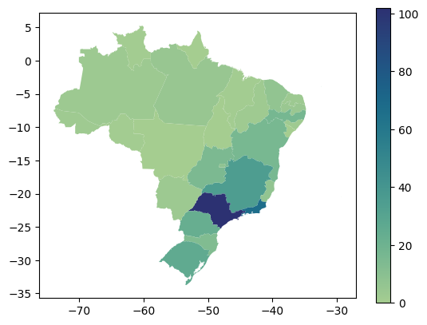
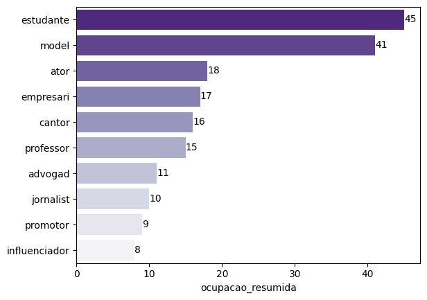
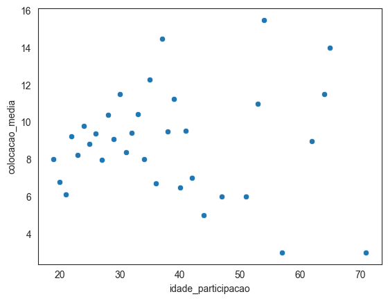

import pandas as pd
import seaborn as sns
from unidecode import unidecode
from zodiac_sign import get_zodiac_sign
from datetime import date, datetime
from numpy import isnan
import matplotlib.pyplot as plt
import geopandas as gpd
data_raw = pd.read_csv("data/dados.csv", sep = ";")Big Brother Brasil - Uma análise exploratória com Python
Big Brother Brasil - Uma análise exploratória com Python
- Introdução
- Dados
- Origem
- Conhecendo os dados
- Desenvolvimento
- Idade
- Região
- Ocupação
- Gênero
- Campeões
- Interativo
- Conclusão
- Referências
Introdução
Big Brother Brasil (BBB) é atualmente o maior reality show transmitido em TV aberta brasileira. Com origem em 1998, nos EUA, o programa é baseado no conceito do “Grande Irmão”, do livro 1984 (George Orwell, 1949), que vigia ininteruptamente os moradores de seu pais. A premissa principal do programa é o isolamento de seus participantes durante 3 meses na “casa mais vigiada do Brasil” com pessoas desconhecidas (e famosos atualmente).
Semanalmente, os participantes passam por desafios que podem trazer recompensas, como a provas do lider ou do anjo, que concedem imunidade e estalecas (moeda ficticia do programa) aos vencedores, e punição aos menos queridos, com o castigo do monstro. Parte de sua popularidade esta no fato da diversidade dos candidatos, trazendo um elenco de pessoas de diversas etnias, idades e gêneros.
A ideia desse relatório é explorar quais são as caracteristicas mais comuns nos candidatos escolhidos, principalmente em relação a idade, profissão e origem, criando um perfil do que seria o “candidato ideal” para a vitória da competição. Se passou pela sua cabeça ser um “brother” ou “sister”, essa análise pode te ajudar a decidir se está na hora de se inscrever no programa e, quem sabe, se tonar milhonário (ou pelo menos receber o célebre título de ex-bbb).
Semanalmente, os participantes passam por desafios que podem trazer recompensas, como a provas do lider ou do anjo, que concedem imunidade e estalecas (moeda ficticia do programa) aos vencedores, e punição aos menos queridos, com o castigo do monstro. Parte de sua popularidade esta no fato da diversidade dos candidatos, trazendo um elenco de pessoas de diversas etnias, idades e gêneros.
A ideia desse relatório é explorar quais são as caracteristicas mais comuns nos candidatos escolhidos, principalmente em relação a idade, profissão e origem, criando um perfil do que seria o “candidato ideal” para a vitória da competição. Se passou pela sua cabeça ser um “brother” ou “sister”, essa análise pode te ajudar a decidir se está na hora de se inscrever no programa e, quem sabe, se tonar milhonário (ou pelo menos receber o célebre título de ex-bbb).
Dados
Origem
Os dados utilizados nesta análise foram compilados através de web scraping das páginas da Wikipédia referentes às 22 edições do programa. O código utilizado pode ser encontrado aqui
Conhecendo os dados
data_raw.shape(366, 9)data_raw.dtypesnome object
genero object
data_nascimento object
idade_participacao float64
ocupacao object
municipio object
estado object
edicao int64
classificacao float64
dtype: object A nossa base é composta por 362 linhas e 8 colunas. As linhas representam todos os participantes das ediçoes de 1 a 22 e as colunas representam algumas informações referentes a esses participantes:
- nome (str): nome completo do participante
- genero (str): genero do participante (para facilitar a analise, assumiu-se o gênero de acordo com o primeiro nome do participante)
- data_nasciment (date): data de nascimento
- idade_participacao (date): idade do participante no inicio do reality show
- ocupacao (str): profissões (em alguns casos, existe mais de uma profissão)
- municipio (str): municipio de nascimento
- estado (str): estado de nascimento
- classificacao (int): colocação final no programa (1 = 1º lugar, 2 = 2º lugar, etc)
- edicao (int): nº da edição
data_raw.head(5)| nome | genero | data_nascimento | idade_participacao | ocupacao | municipio | estado | edicao | classificacao | |
|---|---|---|---|---|---|---|---|---|---|
| 0 | Kleber de Paula Pedra (Bambam) | male | 1978-02-14 | 24.0 | Dançarino | Campinas | São Paulo | 1 | 1.0 |
| 1 | Vanessa Melanie Pascale Ekypenyong Walborn | female | 1974-11-28 | 28.0 | Modelo | Rio de Janeiro | Rio de Janeiro | 1 | 2.0 |
| 2 | André Batista de Carvalho | male | 1974-11-28 | 28.0 | Professor de canto | Rio de Janeiro | Rio de Janeiro | 1 | 3.0 |
| 3 | Antonio Sergio Tavares Campo | male | 1972-12-06 | 30.0 | Cabeleireiro | Angola | Exterior | 1 | 4.0 |
| 4 | Alessandra Begliomini | female | 1974-12-05 | 28.0 | Empresária | São Paulo | São Paulo | 1 | 5.0 |
Exploração
Idade
Vamos iniciar nossa análise verificando qual a distribuição de idade dos selecionados para o programa
sns.set_style("white")
p = sns.histplot(data_raw, x = "idade_participacao", binwidth= 1, kde = True, color = sns.color_palette("Set2")[2])
p.set(xlabel = "Idade", ylabel = "Nº participantes")
sns.despine(left = True, bottom = True)
Nota-se que a há uma preferência em candidatos de 20 a 40 anos. Vamos verificar como essa distribuição varia quando consideramos também o gênero dos participantes.
p = sns.FacetGrid(data_raw, row = 'genero', height= 2, aspect=3, hue = "genero", palette=sns.color_palette("Set2"))
p.map(sns.histplot, "idade_participacao", binwidth = 1, kde = True)
p.set_axis_labels("", "")
p.fig.supxlabel("Idade")
p.fig.supylabel("Nº participantes")
axes = p.axes.flatten()
axes[0].set_title("Masculino")
axes[1].set_title("Feminino")
p.despine(bottom = True, left = True)<seaborn.axisgrid.FacetGrid at 0x180a8a4ec50>
A partir da visualização acima, é perceptível que participantes do gênero feminino tendem a entrar com uma idade inferior aos homens, além de terem menos participantes com idades próximas ou acima de 40 anos.
Podemos verificar também como a variação de idade se comporta em relação as temporadas
data_raw['edicao'] = data_raw['edicao'].astype("str")
plot = sns.boxplot(data = data_raw, y = "edicao", x = "idade_participacao", palette = "Purples")
plot.set(xlabel = "Idade", ylabel = "")
sns.despine(left = True, bottom = True)
Ainda com base na idade, podemos verificar, por curiosidade, como se distribui os signos dos participantes.
# date_str = "1998/05/29"
# date = datetime.strptime(date_str, "%d/%m/%Y")
# get_zodiac_sign(date)
def pegar_signo(data):
try:
data_formatada = datetime.strptime(data, "%Y-%m-%d")
signo = get_zodiac_sign(data_formatada)
return signo
except:
return None
data_raw['signo'] = data_raw.apply(lambda row: pegar_signo(row['data_nascimento']), axis = 1)
# data_raw.apply(lambda row: neutralizar_genero(row['ocupacao']), axis = 1)
plot = sns.countplot(y = data_raw['signo'], order = data_raw['signo'].value_counts().index, palette = "Purples_r")
plot.set(xlabel = "Nº de participantes", ylabel = "")
sns.despine(left = True, bottom = True)
Origem
import requests as re
ibge = re.get("https://servicodados.ibge.gov.br/api/v3/malhas/paises/BR?formato=application/vnd.geo+json&qualidade=maxima&intrarregiao=UF")
geodata = gpd.read_file(ibge.text)siglas = {
"12": ["AC", "Acre"],
"27": ["AL", "Alagoas"],
"13": ["AM", "Amazonas"],
"16": ["AP", "Amapá"],
"29": ["BA", "Bahia"],
"23": ["CE", "Ceará"],
"53": ["DF", "Distrito Federal"],
"32": ["ES", "Espírito Santo"],
"52": ["GO", "Goiás"],
"21": ["MA", "Maranhão"],
"31": ["MG", "Minas Gerais"],
"50": ["MS", "Mato Grosso do Sul"],
"51": ["MT", "Mato Grosso"],
"15": ["PA", "Pará"],
"25": ["PB", "Paraíba"],
"26": ["PE", "Pernambuco"],
"22": ["PI", "Piauí"],
"41": ["PR", "Paraná"],
"33": ["RJ", "Rio de Janeiro"],
"24": ["RN", "Rio Grande do Norte"],
"11": ["RO", "Rondônia"],
"14": ["RR", "Roraima"],
"43": ["RS", "Rio Grande do Sul"],
"42": ["SC", "Santa Catarina"],
"28": ["SE", "Sergipe"],
"35": ["SP", "São Paulo"],
"17": ["TO", "Tocantins"]
}geodata['estado'] = geodata['codarea'].map(siglas)
geodata[["sigla", "estado"]] = pd.DataFrame(geodata['estado'].tolist(), index = geodata.index).reset_index(drop = True)
geodata['estado'] = geodata['estado'].str.strip()estado_count = pd.DataFrame(data_raw['estado'].value_counts().reset_index()).rename(columns = {"index": "estado", "estado": "cont"})
estado_count['estado'] = estado_count['estado'].str.strip()
mapa_count = geodata.merge(estado_count, how = "left", on = 'estado').fillna(0)mapa_count.dissolve("codarea").reset_index().plot(column = "cont", cmap = "crest", legend = True)<AxesSubplot: >
data_raw['estado'].unique()array([' São Paulo', ' Rio de Janeiro', 'Exterior', ' Bahia', ' Paraná',
' Pernambuco', ' Rio Grande do Sul', ' Goiás', ' Santa Catarina',
' Mato Grosso do Sul', ' Distrito Federal', ' Paraíba',
' Buenos Aires', ' Minas Gerais', ' Ceará', ' Pará', ' Piauí',
' Amazonas', ' Espírito Santo', ' Roraima', ' Rio Grande do Norte',
' Alagoas', ' Acre', ' Alepo', ' Rondônia', ' Maranhão'],
dtype=object)Ocupação
Após o fim do programa, é normal os participantes adquirirem uma nova profissão: “Ex-BBB”, mas antes disso é necessário que eles sejam escolhidos com base nas suas profissões atuais. Além de “modelo”, quais outras profissões são importantes para ser escolhido para a casa mais vigiada do Brasil?
data_raw['ocupacao'].str.lower().str.replace(" e ", ",").str.split(",").explode().value_counts()modelo 40
jornalista 10
empresário 10
cantora 10
ator 9
..
estudante de turismo 1
produtora 1
estudante de farmácia 1
coreógrafo 1
bailarino 1
Name: ocupacao, Length: 213, dtype: int64Pode-se remover gênero, acentuação e simplificar as profissões para termos uma ideia melhor de como as profissões são distribuidas
profissoes = data_raw['ocupacao'].str.lower().str.replace(" e ", ",").str.replace(",", "/").str.split("/")
profissoes = [j for i in profissoes for j in i]
for i, profissao in enumerate(profissoes):
palavra = profissao.split()[0]
if palavra == "atriz":
palavra = "ator"
if palavra[-1] in ['a', 'o']:
palavra = palavra[0:-1]
profissoes[i] = palavra
pd.Series(profissoes).value_counts().head(10)estudante 45
model 41
ator 18
empresári 17
cantor 16
professor 15
advogad 11
jornalist 10
promotor 9
influenciador 8
dtype: int64def neutralizar_genero(row):
profissoes = row.replace("/", ", ").replace(" e ", ", ").split(", ")
profissoes_resumidas = []
for i, j in enumerate(profissoes):
profissao = unidecode(j.split(" ")[0]).lower()
if (profissao[-1] in ["a", "o"]):
profissao = profissao[:-1]
elif profissao == "atriz":
profissao = "ator"
profissoes_resumidas.append(profissao)
return profissoes_resumidas
data_raw['ocupacao_resumida'] = data_raw.apply(lambda row: neutralizar_genero(row['ocupacao']), axis = 1)p = sns.barplot(y = data_raw['ocupacao_resumida'].explode().value_counts().index,
x = data_raw['ocupacao_resumida'].explode().value_counts(),
order = data_raw['ocupacao_resumida'].explode().value_counts().iloc[:10].index,
palette = "Purples_r")
p.bar_label(p.containers[0])[Text(0, 0, '45'),
Text(0, 0, '41'),
Text(0, 0, '18'),
Text(0, 0, '17'),
Text(0, 0, '16'),
Text(0, 0, '15'),
Text(0, 0, '11'),
Text(0, 0, '10'),
Text(0, 0, '9'),
Text(0, 0, '8')]
data_raw| nome | genero | data_nascimento | idade_participacao | ocupacao | municipio | estado | edicao | classificacao | signo | ocupacao_resumida | |
|---|---|---|---|---|---|---|---|---|---|---|---|
| 0 | Kleber de Paula Pedra (Bambam) | male | 1978-02-14 | 24.0 | Dançarino | Campinas | São Paulo | 1 | 1 | Aquário | [dancarin] |
| 1 | Vanessa Melanie Pascale Ekypenyong Walborn | female | 1974-11-28 | 28.0 | Modelo | Rio de Janeiro | Rio de Janeiro | 1 | 2 | Sargitário | [model] |
| 2 | André Batista de Carvalho | male | 1974-11-28 | 28.0 | Professor de canto | Rio de Janeiro | Rio de Janeiro | 1 | 3 | Sargitário | [professor] |
| 3 | Antonio Sergio Tavares Campo | male | 1972-12-06 | 30.0 | Cabeleireiro | Angola | Exterior | 1 | 4 | Sargitário | [cabeleireir] |
| 4 | Alessandra Begliomini | female | 1974-12-05 | 28.0 | Empresária | São Paulo | São Paulo | 1 | 5 | Sargitário | [empresari] |
| ... | ... | ... | ... | ... | ... | ... | ... | ... | ... | ... | ... |
| 361 | Bárbara Heck | female | 1992-07-13 | 30.0 | Relações públicas e modelo | Novo Hamburgo | Rio Grande do Sul | 22 | 19 | Cancer | [relacoes, model] |
| 362 | Vitória Nascimento Câmara (Maria) | female | 2000-07-18 | 22.0 | Atriz e cantora | Rio de Janeiro | Rio de Janeiro | 22 | 99 | Cancer | [ator, cantor] |
| 363 | Naiara de Fátima Azevedo | female | 1989-10-30 | 33.0 | Cantora | Campo Mourão | Paraná | 22 | 20 | Escorpião | [cantor] |
| 364 | Rodrigo Abrão de Carvalho Mussi Ivo | male | 1985-09-20 | 37.0 | Gerente comercial | São José dos Campos | São Paulo | 22 | 21 | Virgem | [gerente] |
| 365 | Luciano Estevan Neto da Conceição | male | 1993-06-29 | 29.0 | Ator e bailarino | Florianópolis | Santa Catarina | 22 | 22 | Cancer | [ator, bailarin] |
366 rows × 11 columns
idade_media = data_raw.query("classificacao != 99").groupby("idade_participacao").agg(
colocacao_media = ("classificacao", 'mean')
).reset_index()
sns.scatterplot(data = idade_media, x = "idade_participacao", y = "colocacao_media")<AxesSubplot: xlabel='idade_participacao', ylabel='colocacao_media'>
data_raw.columnsIndex(['nome', 'genero', 'data_nascimento', 'idade_participacao', 'ocupacao',
'municipio', 'estado', 'edicao', 'classificacao', 'signo',
'ocupacao_resumida'],
dtype='object')signo_final = data_raw.query("classificacao != 99").groupby("signo").agg(
classificacao_media = ("classificacao", "mean")
)
signo_final| classificacao_media | |
|---|---|
| signo | |
| Aquário | 9.206897 |
| Cancer | 8.444444 |
| Capricórnio | 9.538462 |
| Escorpião | 8.705882 |
| Gêmeos | 10.200000 |
| Leão | 8.846154 |
| Libra | 9.656250 |
| Peixes | 8.400000 |
| Sargitário | 8.800000 |
| Touro | 9.500000 |
| Virgem | 9.857143 |
| Áries | 9.875000 |
data_raw['ocupacao_resumida'].explode()0 dancarin
1 model
2 professor
3 cabeleireir
4 empresari
...
362 cantor
363 cantor
364 gerente
365 ator
365 bailarin
Name: ocupacao_resumida, Length: 425, dtype: objectdata_raw.query("classificacao != 99").explode("ocupacao_resumida").groupby('ocupacao_resumida').agg(
colocacao_media = ("classificacao", "mean"),
count = ("ocupacao_resumida", 'count')
).reset_index().query("count > 1").sort_values("colocacao_media", ascending= True)| ocupacao_resumida | colocacao_media | count | |
|---|---|---|---|
| 79 | maquiador | 3.000000 | 2 |
| 14 | auxiliar | 4.333333 | 3 |
| 10 | assessor | 4.500000 | 2 |
| 0 | administrador | 5.200000 | 5 |
| 1 | advogad | 6.000000 | 11 |
| 2 | aeromoc | 6.000000 | 2 |
| 92 | personal | 6.666667 | 3 |
| 40 | dancarin | 6.800000 | 5 |
| 95 | professor | 7.200000 | 15 |
| 94 | produtor | 7.200000 | 5 |
| 81 | medic | 7.428571 | 7 |
| 78 | lutador | 7.500000 | 4 |
| 56 | escritor | 8.000000 | 2 |
| 4 | analist | 8.333333 | 3 |
| 13 | ator | 8.466667 | 15 |
| 7 | arquitet | 8.500000 | 2 |
| 114 | vendedor | 8.500000 | 6 |
| 98 | promotor | 8.875000 | 8 |
| 31 | comerciante | 9.000000 | 3 |
| 58 | estudante | 9.069767 | 43 |
| 38 | cozinheir | 9.333333 | 3 |
| 117 | youtuber | 9.500000 | 4 |
| 53 | empresari | 9.588235 | 17 |
| 26 | cantor | 9.600000 | 15 |
| 83 | model | 9.650000 | 40 |
| 9 | artist | 9.800000 | 5 |
| 55 | engenheir | 9.833333 | 6 |
| 16 | bacharel | 10.000000 | 7 |
| 25 | cabeleireir | 10.000000 | 3 |
| 59 | ex-bbb | 10.333333 | 6 |
| 77 | jornalist | 10.555556 | 9 |
| 42 | designer | 10.750000 | 8 |
| 101 | publicitari | 10.857143 | 7 |
| 86 | music | 11.166667 | 6 |
| 113 | tradutor | 11.500000 | 2 |
| 44 | dj | 11.666667 | 3 |
| 75 | influenciador | 12.000000 | 8 |
| 66 | futebolist | 12.000000 | 2 |
| 34 | consultor | 12.250000 | 4 |
| 103 | rapper | 12.333333 | 3 |
| 69 | gerente | 12.500000 | 4 |
| 100 | psicolog | 13.000000 | 3 |
| 28 | cientist | 13.333333 | 3 |
| 110 | surfist | 13.500000 | 2 |
| 111 | tecnic | 14.000000 | 2 |
| 6 | apresentador | 14.666667 | 3 |
| 19 | barman | 15.000000 | 2 |
| 17 | bailarin | 15.142857 | 7 |
| 27 | cartomante | 16.000000 | 2 |
data_raw.corr()C:\Users\Carlos\AppData\Local\Temp\ipykernel_15644\793374919.py:1: FutureWarning: The default value of numeric_only in DataFrame.corr is deprecated. In a future version, it will default to False. Select only valid columns or specify the value of numeric_only to silence this warning.
data_raw.corr()| idade_participacao | edicao | classificacao | |
|---|---|---|---|
| idade_participacao | 1.000000 | 0.191164 | 0.048936 |
| edicao | 0.191164 | 1.000000 | 0.062528 |
| classificacao | 0.048936 | 0.062528 | 1.000000 |
from scipy.stats import chi2_contingency
crosstab = pd.crosstab(index = data_raw['genero'], columns=data_raw['classificacao'])
crosstab| classificacao | 1 | 2 | 3 | 4 | 5 | 6 | 7 | 8 | 9 | 10 | ... | 14 | 15 | 16 | 17 | 18 | 19 | 20 | 21 | 22 | 99 |
|---|---|---|---|---|---|---|---|---|---|---|---|---|---|---|---|---|---|---|---|---|---|
| genero | |||||||||||||||||||||
| female | 11 | 16 | 9 | 2 | 13 | 11 | 9 | 9 | 15 | 12 | ... | 12 | 6 | 8 | 6 | 4 | 2 | 3 | 0 | 0 | 8 |
| male | 11 | 6 | 8 | 8 | 7 | 11 | 14 | 13 | 7 | 11 | ... | 8 | 8 | 4 | 5 | 5 | 4 | 2 | 1 | 1 | 13 |
2 rows × 23 columns
H0: as variaveis não são correlacionadas entre si
chisqresults = chi2_contingency(crosstab)
chisqresultsChi2ContingencyResult(statistic=36.985217907980065, pvalue=0.023744343204973112, dof=22, expected_freq=array([[11. , 11. , 8.5, 5. , 10. , 11. , 11.5, 11. , 11. , 11.5, 11. ,
10.5, 10. , 10. , 7. , 6. , 5.5, 4.5, 3. , 2.5, 0.5, 0.5,
10.5],
[11. , 11. , 8.5, 5. , 10. , 11. , 11.5, 11. , 11. , 11.5, 11. ,
10.5, 10. , 10. , 7. , 6. , 5.5, 4.5, 3. , 2.5, 0.5, 0.5,
10.5]]))